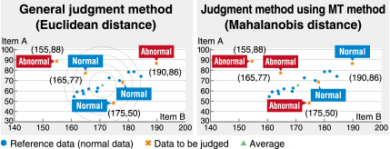

Solutions
Data Collection/Analysis

The Cycle for shop floor Improvement With Data Utilization
Improving productivity, quality, and energy efficiency by utilizing shop floor data to find the key to solving production issues and promoting improvements
Case12Performing analysis and diagnosis with a PLC
Visualization
analysis
Diagnosis
Issues

Solution
Analyze and diagnose quickly and at low cost with free sample projects (e-F@ctory Starter Package) equipped with various analysis/diagnosis methods.
e-F@ctory Starter Package
Benefits of e-F@ctory Starter Package
➊ Low initial costs
- Initial costs are low because creating sequence programs and screen data from scratch is not required.
❷ Easy IoT implementation for equipment
- IoT functions can be added with basic settings*1.
*1. Device assignment, parameter registration, etc.
Wave guard band monitoring
● Features
- Guard band waveforms are created from a reference waveform, and the input waveform data is monitored.
- Created guard band waveforms can be saved and read in CSV format. Guard band waveforms created by a computer can also be read.

MT method*2 simple diagnosis
● What is MT method?
- The MT method is a method of multivariate analysis for detecting anomalies.
- In this method, a reference (unit space) is created from the normal data, and normality/anomaly is judged from the degree of deviation (Mahalanobis distance) between the reference and the measured data quantified.
*2.MT stands for Mahalanobis-Taguchi.

● Features
- PLC calculates feature quantities of time-series and vibration data, and the Mahalanobis distances are monitored by the MT method.
- PLC and GOT are the only devices required to collect, visualize, analyze, and diagnose data. These devices are readily available and require low maintenance, thus integration at the shop floor simple.